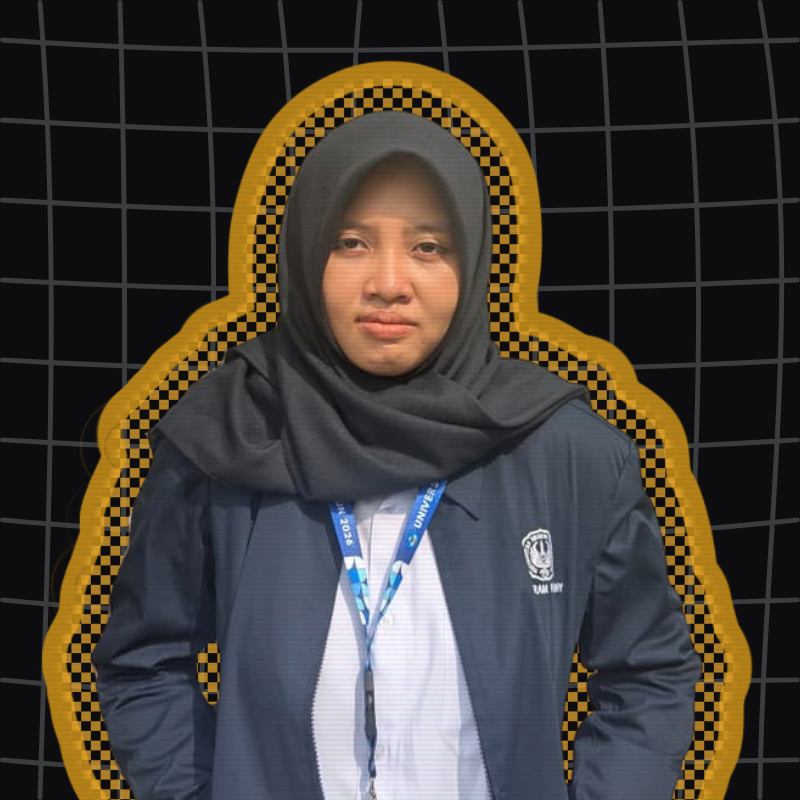
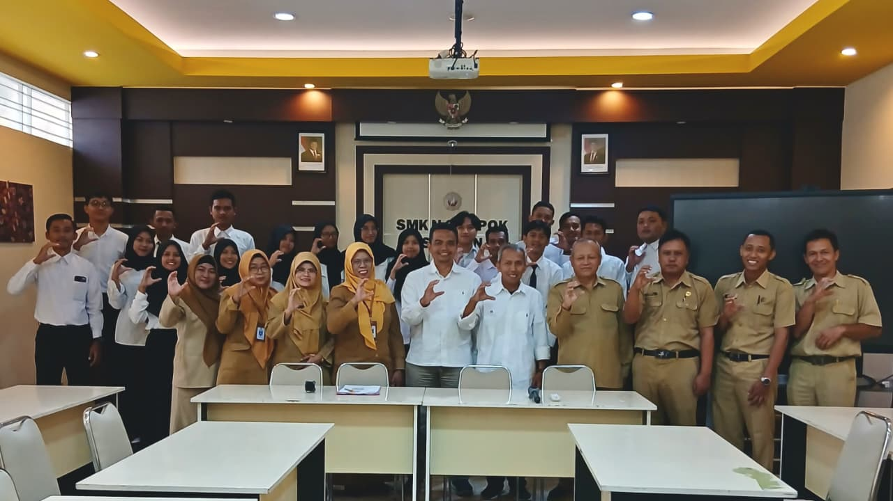

E-Portfolio Calon Guru Profesional.
Dokumentasi perjalanan belajar, praktik mengajar, dan refleksi profesional selama program PPG Prajabatan — dibangun dengan dedikasi penuh.
Siapa Saya
Calon pendidik bidang informatika dengan ketertarikan pada AI, Machine Learning, dan teknologi pembelajaran inovatif.

Saya, Rahma Hayuning Astuti, lahir dan besar di Demak, Jawa Tengah — kota yang dikenal sebagai salah satu pusat penyebaran Islam di Nusantara, dengan Masjid Agung Demak yang telah berdiri sejak abad ke-15 sebagai ikonnya. Tumbuh di lingkungan yang kental dengan nilai kebersamaan dan gotong royong mengajarkan saya bahwa belajar bukan proses yang soliter — melainkan sesuatu yang tumbuh subur ketika dilakukan bersama.
Setelah menyelesaikan pendidikan S1 Teknik Informatika di Universitas Dian Nuswantoro, Semarang pada tahun 2023, saya melanjutkan perjalanan ke Yogyakarta untuk menempuh Program PPG Prajabatan di Universitas Negeri Yogyakarta — membawa semangat dari kota wali untuk menjadi pendidik yang tidak hanya mengajarkan teknologi, tetapi juga nilai-nilai yang melampaui kode dan algoritma.


Perjalanan saya menuju dunia pendidikan tidak dimulai dari cita-cita menjadi guru — melainkan dari kecintaan pada AI dan Machine Learning. Saya mengenal karya Andrej Karpathy, Andrew Ng, dan Fei-Fei Li bukan hanya karena kontribusi riset mereka, tetapi karena satu kesamaan yang saya kagumi: kemampuan menjelaskan hal yang sangat kompleks dengan cara yang bisa dipahami siapa pun.
Karpathy menjelaskan neural network dari nol lewat YouTube dan ditonton jutaan orang. Andrew Ng membangun Coursera karena percaya pendidikan AI harus bisa diakses semua orang. Fei-Fei Li terus berbicara tentang AI yang berpusat pada manusia. Dari mereka saya belajar bahwa menjadi ahli belum cukup — yang lebih penting adalah bagaimana kamu membawa pengetahuan itu ke orang lain. Itulah yang ingin saya wujudkan sebagai guru informatika.
Artefak Pembelajaran
modul ajar, media, LKPD, hasil kerja siswa, dan bahan ajar — klik lihat analisis untuk melihat analisis mendalam dan refleksi per siklus.
Penilaian dari Guru Pamong & DPL
Lampiran 7 (Penilaian Penyusunan Perangkat) dan Lampiran 8 (Penilaian Praktik Mengajar) — 3 siklus PPL Terbimbing.
Misi & Model Guru Profesional
Rancangan misi, kompetensi, dan karakter yang ingin dibangun menuju guru informatika profesional.
- Merancang pembelajaran berbasis project dan problem-solving
- Mengintegrasikan AI/ML sebagai alat bantu pembelajaran
- Melakukan asesmen autentik dan berdiferensiasi
- Menguasai computational thinking secara mendalam
- Reflektif — terus mengevaluasi dan memperbaiki praktik mengajar
- Adaptif — responsif terhadap kebutuhan peserta didik
- Inspiratif — memotivasi siswa berani bermimpi besar
- Kolaboratif — terbuka belajar bersama rekan dan siswa
- Peserta didik aktif dan antusias dalam belajar
- Capaian pembelajaran meningkat tiap siklus
- Umpan balik positif dari GP, DPL, dan siswa
- Portofolio pembelajaran berkembang konsisten
Dokumentasi Kegiatan PPL
Rekam jejak PPL di SMK N 2 Depok Sleman.

📷foto orientasi